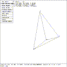

 Figure (menu-arb-ctl): ARB Control Menu
The GENERAL ARB class of solids represents all the convex polyhedrons (RPP, BOX, RAW, and ARBs). The ARBs comprise five classes of polyhedrons each with a characteristic number of vertices. These are the ARB8, ARB7, ARB6, ARB5, and ARB4, where the ARB8 has eight vertices, etc. During editing, all the vertices are labeled on the screen.
An ARB is defined by a fixed number of vertices where all faces must be planar. This fact means that during parameter editing, movement of individual vertices in faces containing four vertices is not allowed. There are three classes of parameter editing that can be done to ARBs: move edges, move faces, and rotate faces. There is an ``ARB control menu'' (see Figure (menu-arb-ctl) ) from which one selects the type of parameter editing to be done. A specific ARB edit menu will appear dependent on which parameter editing option was selected. The ``return'' entry on each of these specific menus will return the ``ARB control'' menu to the screen.
Note that there are several keyboard commands that apply only to ARB solids which are being edited in SOLID EDIT state. Once such command is mirface, which replaces a designated face of the ARB with a copy of an original face mirrored about the indicated axis. Another such command is extrude, which projects a designated face a given amount in the indicated direction.
{kind=link}